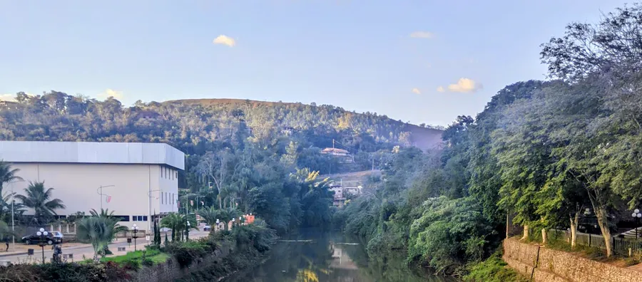
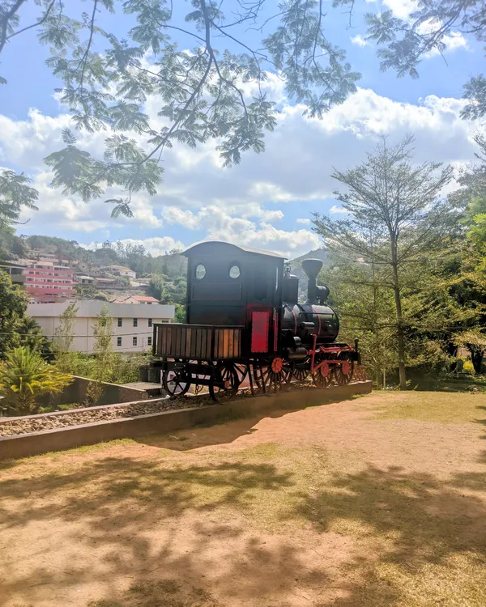
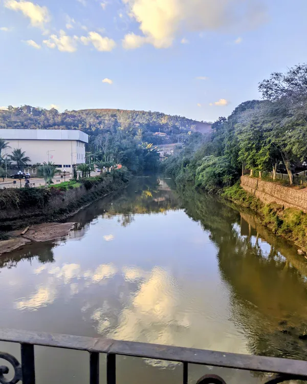
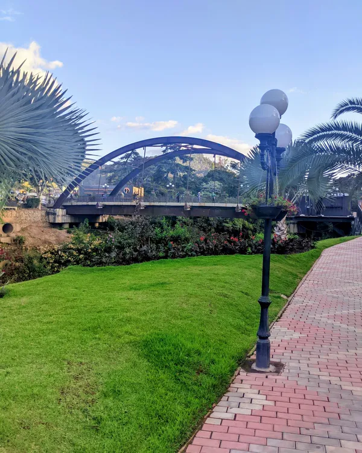
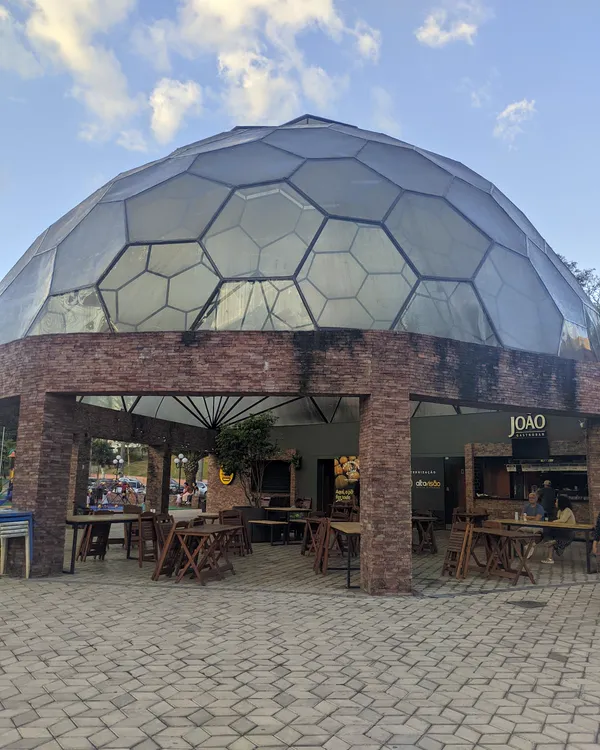
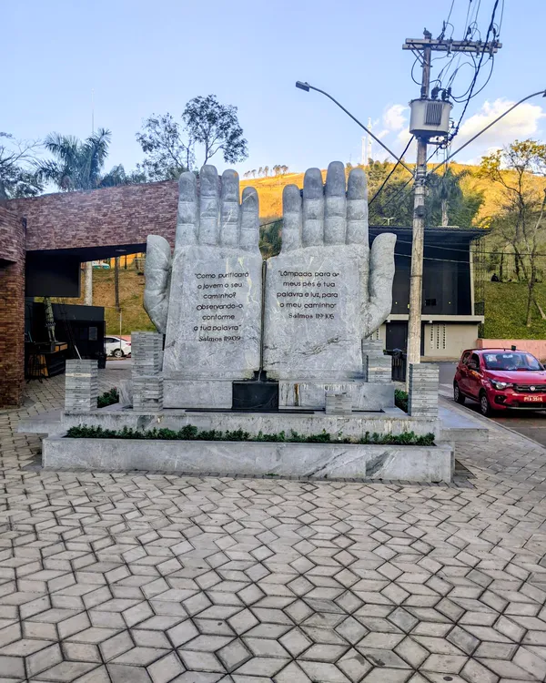
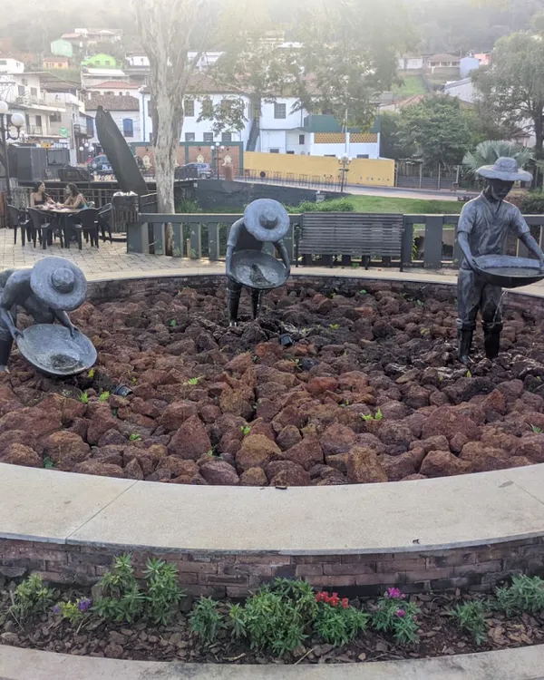
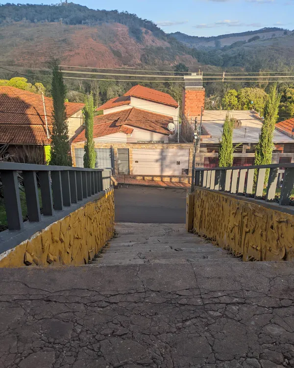

Seu Guia RP
Rio Piracicaba · MGDescubra o melhor de Rio Piracicaba! O guia que conecta você à nossa cidade.
ComércioTurismoEventos
5,0 no Google
- Avaliar no GoogleLeva 1 minuto e ajuda muito o guia
- Falar no WhatsApp(31) 99068-8048
- Instagram@seuguiarp · 28,7 mil seguidores
Rio Piracicaba em fotosArraste pro lado







Seu Guia RP · Rio Piracicaba/MG
Desenvolvido por Marcelo Ribeiro